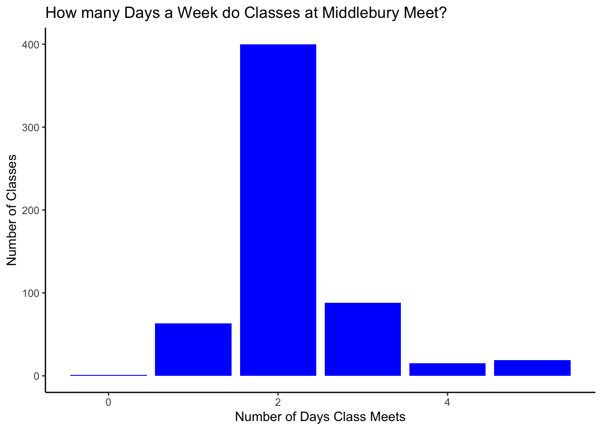

library(tidyverse)STAT 118: Notes Q
Working with text with stringr


A few basics
What is a string?
- datatype we use to represent text
- use ” ”
Examples of strings:
- “Hello world”
- “5678”
- “blah blah blah”
** NOT a string:**
- 5678
Using stringr
stringr is a package containing a bunch of functions that help us work with strings. We’ll discuss how to detect, remove, extract, and count words/characters/phrases from a string. We’ll also talk about how to slice a string to get only the parts (aka the substrings) of it that you want.
stringr is contained within the tidyverse package.
I’m registering for classes this Spring and am trying to decide what to take. Let’s look at the course catalog!
Read in the courses data.
courses <- read_csv("Fall23courses.csv")str_detect

inputs: - string - pattern
output: - TRUE/FALSE
little example:
str_detect("Welcome to data science, look at this cool data", "data")[1] TRUEstr_detect("Welcome to data science, look at this cool data", "pineapple")[1] FALSEI only want to take classes in Warner!
courses %>%
filter(str_detect(location, "WNS"))# A tibble: 45 × 9
titles distros department time location professor description courseNum
<chr> <chr> <chr> <chr> <chr> <chr> <chr> <chr>
1 Gothic and… AMR HI… Program i… 2:15… "Warner… Michael … "\nThis co… AMST0225…
2 Education … AMR SOC Program i… 2:15… "Warner… Melissa … "\nWhat ar… BLST0115…
3 Economic S… DED Economics 2:15… "Warner… Amanda G… "\nAn intr… ECON0111…
4 Introducto… SOC Economics 9:45… "Warner… Raphaell… "\nAn intr… ECON0150…
5 Introducto… SOC Economics 11:1… "Warner… Raphaell… "\nAn intr… ECON0150…
6 Introducto… SOC Economics 8:15… "Warner… Will Pyle "\nAn intr… ECON0155…
7 Introducto… SOC Economics 9:45… "Warner… Will Pyle "\nAn intr… ECON0155…
8 Microecono… <NA> Economics 12:4… "Warner… <NA> "\nMicroec… ECON0255…
9 Microecono… <NA> Economics 2:15… "Warner… <NA> "\nMicroec… ECON0255…
10 Federal Re… AMR DED Economics 1:30… "Warner… Erin Wol… "\nIn this… ECON0360…
# ℹ 35 more rows
# ℹ 1 more variable: meet <chr>Suppose I don’t want any classes on Friday. Let’s use str_detect to find our options.
notFriday <- courses %>%
filter(!str_detect(meet, "Friday"))Perhaps I’m interested in immigration.
The regex function is used to write regular expressions in R. Regular expressions are helpful if you want to search for a pattern rather than a specific word or phrase.
For now, we will only use regex to ignore capitalization.
If you’re interested in using regular expressions at some point, this regex cheat sheet will be super helpful.
immigrationclasses <- courses %>%
filter(str_detect(description, regex("immigration", ignore_case=TRUE)))
immigrationclasses# A tibble: 10 × 9
titles distros department time location professor description courseNum
<chr> <chr> <chr> <chr> <chr> <chr> <chr> <chr>
1 Immigrant … AMR HIS Program i… 11:1… "Axinn … Rachael … "\nIn this… AMST0175…
2 Introducti… EUR LN… French 2:15… "Le Cha… William … "\nIn this… FREN0230…
3 Introducti… CW EUR… French 2:15… "Le Cha… William … "\nIn this… FREN0230…
4 The United… AMR HIS History 9:45… "Axinn … Joyce Mao "\nThis co… HIST0206…
5 Introducti… CMP Internati… 12:4… "Twilig… Amit Pra… "\nThis is… IGST0101…
6 An Introdu… EUR LN… Italian 9:45… "Wright… Thomas V… "\nIntende… ITAL0251…
7 An Introdu… EUR LN… Italian 11:1… "75 Sha… Sandra C… "\nIntende… ITAL0251…
8 Globalizat… SOC Political… 2:15… "Librar… Orion Le… "\nHow doe… PSCI0314…
9 City Polit… <NA> Political… 11:1… "LaForc… Bert Joh… "\nCities … PSCI0465…
10 Christiani… AMR HI… Religion 7:30… "Librar… James Ca… "\nReligio… RELI0398…
# ℹ 1 more variable: meet <chr>str_extract and str_remove
str_extract inputs: - string - pattern str_extract output: - the extracted pattern, if it appears in the the string
str_remove inputs: - string - pattern str_extract output: - the string without the pattern, if it appears in the string
little example:
str_extract("Welcome to data science, look at this cool data", "data")[1] "data"str_extract_all("Welcome to data science, look at this cool data", "data")[[1]]
[1] "data" "data"str_remove("Welcome to data science, look at this cool data", "data")[1] "Welcome to science, look at this cool data"str_remove_all("Welcome to data science, look at this cool data", "data")[1] "Welcome to science, look at this cool "CW is part of the distribution requirement column. I want CW to be its own column.
courses %>%
mutate(CW = str_extract(distros, "CW")) %>%
mutate(distros = str_remove(distros, "CW"))# A tibble: 586 × 10
titles distros department time location professor description courseNum
<chr> <chr> <chr> <chr> <chr> <chr> <chr> <chr>
1 Introducti… AMR CMP Program i… 12:4… "Axinn … Roberto … "\nIn this… AMST0101…
2 Immigrant … AMR HIS Program i… 11:1… "Axinn … Rachael … "\nIn this… AMST0175…
3 American L… AMR LIT Program i… 11:1… "Axinn … Ellery F… "\nA study… AMST0209…
4 Introducti… AMR HI… Program i… 1:30… "Twilig… Roberto … "\nIn this… AMST0213…
5 Gothic and… AMR HI… Program i… 2:15… "Warner… Michael … "\nThis co… AMST0225…
6 American C… AMR HIS Program i… 9:45… "Axinn … Holly Al… "\nFor man… AMST0234…
7 Constructi… AMR ART Program i… 1:30… "Ross C… Deb Evans "\n“Democr… AMST0251…
8 African Am… AMR LIT Program i… 9:45… "Axinn … William … "\nThis co… AMST0252…
9 American D… AMR HI… Program i… 11:1… "Axinn … Susan Bu… "\nIn this… AMST0260…
10 Chicagoland AMR HIS Program i… 11:1… "Giffor… Jim Ralp… "\nIn this… AMST0264…
# ℹ 576 more rows
# ℹ 2 more variables: meet <chr>, CW <chr>str_sub
str_sub inputs: - string
- starting character - ending character str_sub output: - string with only the characters between the start and the end
little example:
str_sub("Welcome to data science, look at this cool data", start=12, end=23) [1] "data science"Bounds are inclusive!
Maybe I only want 200 level math classes.
- First we filter for just math classes.
- Then we can create a new column called
levelthat contains only the sixth character from thecoursescolumn.
We call this a substring, hence the function str_sub.
MathClasses <- courses %>%
filter(department == "Mathematics") %>%
mutate(level=str_sub(courseNum, start=6, end=6))
Math2Classes <- MathClasses %>%
filter(level== "2")str_count
str_count inputs: - string
- pattern str_count output: - a count of the number of times the pattern appears in the string
little example:
str_count("Welcome to data science, look at this cool data", "data")[1] 2Maybe I only want my classes to meet twice a week.
courses <- courses %>%
mutate(dayCount = str_count(meet, "day"))
#what's the maximum number of days a week a class meets?
max(courses$dayCount)[1] 5#what's the mean number of days?
mean(courses$dayCount)[1] 2.187713Let’s visualize this data.
courses %>%
ggplot() +
geom_bar(aes(x=dayCount), fill="blue") +
xlab("Number of Days Class Meets") +
ylab("Number of Classes") +
labs(title="How many Days a Week do Classes at Middlebury Meet?")+
theme_classic()
Another useful function str_squish
str_squish is used to remove leading, trailing, and repeated interior whitespaces from strings